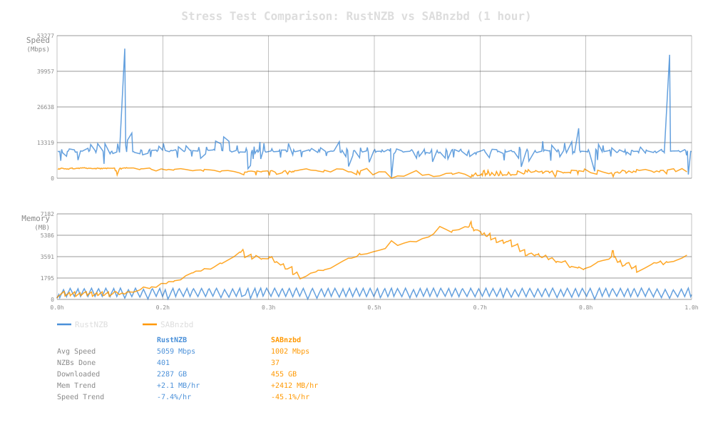

A Modern Usenet Binary Downloader, Rewritten From the Ground Up in Rust
Built from scratch with zero legacy dependencies. Fast, efficient, and designed for self-hosters. Full NNTP pipeline with yEnc decoding, PAR2 verification & repair, archive extraction, and a clean web UI. No inherited technical debt — just modern Rust with async I/O, connection pooling, and NNTP pipelining for maximum throughput.
Everything you need for Usenet downloads — no legacy code, no inherited dependencies, built from scratch in Rust
Send multiple ARTICLE commands per connection before reading responses. Configurable pipeline depth per server eliminates round-trip latency.
Priority-ordered server list with automatic failover. Articles not found on one server are retried on the next. Optional servers for fill providers.
Fast, correct yEnc decoder with CRC32 validation. Handles multi-part articles, escape sequences, and assembles files from decoded segments.
Automatic PAR2 verification after download. Damaged files are repaired using recovery blocks before extraction. Full pipeline automation.
Automatic extraction of RAR, 7z, and ZIP archives after download and repair. Supports multi-part RAR (new and old naming) with cleanup.
Responsive single-page web interface. Queue management, download history, server configuration, real-time logs, and drag-and-drop NZB upload.
Native desktop application for Windows, macOS, and Linux powered by Tauri. System tray with queue count and speed, lightweight and fast.
Full HTTP API with Swagger/OpenAPI documentation. Queue, history, server management, status, and log endpoints. SABnzbd-compatible API layer.
Import your SABnzbd configuration with one click. Upload your sabnzbd.ini or connect to a live instance — servers, categories, and settings are imported automatically.
Built-in tracing and metrics export via OpenTelemetry. Ship logs and metrics to Grafana, Jaeger, or any OTLP-compatible backend.
A modular Rust workspace with clean separation of concerns
Head-to-head comparison with SABnzbd under identical conditions
Sustained load with continuous NZB submission — 50 NNTP connections, 5 concurrent jobs

Sequential benchmarks — same mock NNTP server, same data, same connections
| Metric | rustnzb | SABnzbd |
|---|---|---|
| Total time | 4.2s | 5.0s |
| Avg speed | 10,316 Mbps | 8,535 Mbps |
| Peak speed | 12,366 Mbps | 10,114 Mbps |
| Memory avg | 159 MB | 187 MB |
| Metric | rustnzb | SABnzbd |
|---|---|---|
| Total time | 10.2s | 14.1s |
| Avg speed | 8,394 Mbps | 6,098 Mbps |
| Peak speed | 9,402 Mbps | 7,575 Mbps |
| Memory avg | 281 MB | 282 MB |
| Metric | rustnzb | SABnzbd |
|---|---|---|
| Total time | 19.9s | 29.2s |
| Avg speed | 4,324 Mbps | 2,941 Mbps |
| Download time | 11.9s | 15.2s |
| Unpack time | 8.0s | 14.0s |
| Disk write avg | 887 MB/s | 579 MB/s |
| Metric | rustnzb | SABnzbd |
|---|---|---|
| Download time | 4.0s | 9.4s |
| Par2 repair time | 29.4s | 21.0s |
| Total time | 33.5s | 30.4s |
| Memory peak | 502 MB | 1,250 MB |
rustnzb downloads 2.4x faster, but SABnzbd's par2cmdline-turbo binary currently edges out the pure-Rust PAR2 implementation on repair. Memory usage is 60% lower in rustnzb.
All benchmarks run on the same machine (48 vCPUs, 252 GB RAM) using Docker containers with no resource limits. Both clients configured identically: 50 NNTP connections, no speed limits, post-processing disabled for raw tests. Data served by a mock NNTP server (comparison tests) or synthetic NNTP server (stress tests) running locally to eliminate network variability. Full methodology and raw data available in the benchnzb directory.
Interactive demo with simulated download queue
| Name | Status | Progress | Speed | Size |
|---|---|---|---|---|
| Ubuntu.24.04.Desktop.x64 | Downloading | 67% |
32.1 MB/s | 4.7 GB |
| LibreOffice.7.6.Full.Pack | 45% |
— | 2.1 GB | |
| Blender.4.0.Benchmark.Scenes | Downloading | 23% |
16.1 MB/s | 8.3 GB |
| PostgreSQL.16.Docs.Pack | Completed | 100% |
— | 892 MB |
Alpha builds — Linux and Windows. Docker image available.
docker run -d --name rustnzb \ -p 9090:9090 \ -v rustnzb-config:/config \ -v rustnzb-data:/data \ -v ~/downloads:/downloads \ ghcr.io/ausagentsmith-org/rustnzb:alpha
Port: 8080 (Web UI + API)
Config: Configure your Usenet server(s) via the web UI on first launch
All files: dl.rustnzb.dev/latest/ (includes SHA256 checksums)
Config: Configure your Usenet server(s) via the web UI on first launch
rustnzb is a drop-in replacement for SABnzbd — use the SABnzbd download client type in your *arr apps
In Sonarr or Radarr, go to Settings → Download Clients → Add and select SABnzbd.
Set the Host and Port to your rustnzb instance. If running in the same Docker network, use the container hostname and internal port (default 9090).
If you have set an api_key in your rustnzb config.toml, enter it here. If no key is configured, any value will work.
Set the Category to match one configured in rustnzb (e.g. tv for Sonarr, movies for Radarr). This controls the output directory.
Protocol: rustnzb speaks the full SABnzbd API protocol — queue, history, categories, pause/resume, and file upload all work out of the box.
Prowlarr: Also supports SABnzbd download client type for NZB indexer integration.
From NZB file to extracted content — fully automated
XML parsing extracts article message IDs, file segments, groups, and metadata. Password support via <meta> tags.
NNTP connections fetch articles with pipelining. Multi-server failover retries missing articles on backup servers.
yEnc-encoded article bodies are decoded with CRC32 validation. Segments are assembled into complete files.
PAR2 checks file integrity. If blocks are missing, recovery data is used to reconstruct damaged files.
Archives (RAR, 7z, ZIP) are extracted. Temporary files (par2, rar volumes) are cleaned up. Output moved to final directory.